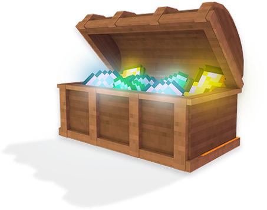

Ip: cheburworld_test.aternos.me
1.21.5

Добавлены новые растенья, листья и окрас у животных
1.21.4
Добавили новый биом БЛЕДНЫЙ САД, а вместе с ним новые цветки, несколько видов бледного мха и нового враждебного моба.
1.21
Добавлен новый данж - ДВОРЕЦ ИСПЫТАНИЙ, новые спавнеры и самое главное новый моб БРИЗ
1.19
Добавили новую генерацию миров. Добавили новый данж ГОРОД. Туда добавили жуткого моба ХРАНИТЕЛЬ или же ВАРДЕН. И новые блоки: скалк, скалковый катализатор и другие относящиеся к ним.
ТГ чат
Главная Страница